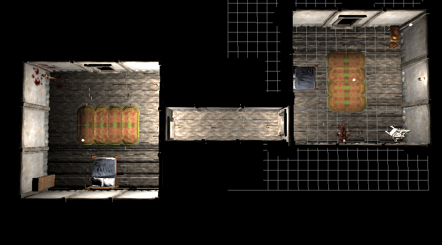

Community Contest 5: Room Contest


Contents
- 1 Brief
- 2 Groups and Prizes
- 3 Helpful Links
- 4 Entries
- 4.1 Entry File(s)
- 4.2 Checklist
- 4.3 Consent to Share
- 4.4 Banqueting Hall by Nattfodd - 1st Place
- 4.5 Library by Semper - 2nd Place
- 4.6 A place to call home by Nimee - 3rd Place
- 4.7 Inn Bedrooms by Jackkel Dragon
- 4.8 Dead Room by Shadow5973
- 4.9 Vigil Suite by Bloodsong
- 4.10 Estate Dormitory by BlackPhi
Brief
Create an indoor room and export it as a SEL for other modders to paste into their levels. The contest discussion thread can be found here.
Contest Closed - this contest has now finished. You can download the bundle from Dragon Age Nexus
Requirements
All entries must:
- be submitted as a SEL (see tutorial)
- make suitable use of folders to organise the lights and models
- have doorways or suitable plug pieces to enter/exit the room
- contain lights to illuminate the room
Guidelines
Strong entries will:
- be distinctive, but suitable for use in a variety of modules
- make good and varied use of environment models
- make suitable use of VFX such as light rays, candle flames, etc where needed
- ensure that lighting looks good in-game
Suggestions
Forge, armory, servants' quarters, bedchamber, tavern bedroom, tavern drinking hall, feast hall, indoor stage theater, kitchen, dungeon, torture room, prison cell, mausoleum, creature's lair, chapel, training room, barracks, meeting room, dining room, vault, guardhouse, groundskeeper's lodge, stable.
Allowable
While no "bonus points" will be given for the following, entries may:
- include multiple rooms - particularly if creating a "tileset of rooms".
- include custom props - if you do this you must state clearly on the contest page that your entry is using custom assets. Please avoid this unless absolutely necessary for your room - we want these SEL files to be as easily usable as possible.
Not Allowable
Please:
- do not cut-paste from a DAO level without making serious modifications to "make it your own"
- do not submit an entire level as your work. consider what will make USEFUL rooms for slotting into a module. For example, corridors are generally not useful for slot-ins.
Groups and Prizes
Groups
This contest has only one group.
- 1st place - 15 points, chooses first
- 2nd place - 10 points, chooses second
- 3rd place - 5 points, chooses third
- Best Newcomer - 3 points (unless 1st, 2nd or 3rd place)
- All other entries meeting requirements - 1 point
To receive an "entry point", your submission must meet the requirements of the contest, listed at the top of this page
Best Newcomer Award
Every judge may nominate one newcomer as their favourite newcomer entry. To qualify, the entrant must not have submitted to a community contest before. The winning newcomer will receive three points if they don't podium (in which case, theyll be getting more points anyway!).
Prizes
Please see Community Contest Prizes
Helpful Links
- Contest 5 video tutorial
- Level Editor - Builder Wiki
- Level Editor Tutorial - Builder Wiki
Entries
Entry File(s)
File Contents:
- one or more SEL files
- if you have any custom props etc, include those and their source files if appropriate. (please try and just use DA stuff for this contest to keep things simple)
File Format: one .7z file (preferred)
Checklist
- Create your file (see above)
- Create a Dragon Age Nexus page for your entry and upload the above file. Please include "Community Contest" in the title.
- Edit this page with a description and pictures of your content.
- Please include pictures which are both functional as well as attractive (so your work can be seen clearly)
- Link to your DA Nexus page. See the sample entry.
- Optionally, let us know in the Contest Discussion Thread that you've entered
For the general entry guidelines (as well as more detail on the above steps), please see the Entry FAQs
For information on Judging, please see the Judging page.
IMPORTANT - consent to share By entering this competition you consent to share your work for other community members to benefit from. Where appropriate, source files should be shared (prop models, VFXProj files). The work *MUST* be your own (obviously you may use DA assets). Others may use and modify your work in their Dragon Age mods, though are encouraged to give credit. As the entries are judged, local copies will be saved If your work is taken down. If your work is taken down, you allow for it to be re-uploaded, crediting the work in your name.
Banqueting Hall by Nattfodd - 1st Place
After a hard day of battles and fights, the evening is the right moment to take a rest, banqueting and sharing the treasures with your comrades.
Eat, drink and enjoy your time: you deserve it.
NOTE: This is a .sel file to be imported into the toolset.
{kind=link}
{kind=link}
{kind=link}
{kind=link}
Judges' Comments
mikemike37
- fire VFX and orange lights give it a really strong atmosphere
- being a large space, the props break it up nicely.
- using floors for walls has an unfortunate side-effect of looking through them awkwardly in top-down camera. can be fixed to some extent by surrounding with black boxes or setting some models' cut away override to true to hide them when in top-down cam.
Library by Semper - 2nd Place
A dusty and old place for everybody brave enough to discover the long forgotten tales hidden within ancient books. The piles of books are taller than a dwarf - that is why usually at least two dwarfs are working at libraries.
NOTE: This is a .sel file to be imported into the toolset. The entrance upstairs is this dark to provide easy integration to other levels to keep the atmosphere of the hallway/entrance leading to the library.
{kind=link}
{kind=link}
{kind=link}
{kind=link}
Judges' Comments
mikemike37
- Nice "claustrophobic study" feel. good use of varied props and models as well as lighting. solid room.
- lighting is a tiny bit too dark for my taste.
- users: its pretty small, so use this for dialogue with either a book or an NPC. youll be too restricted for a fight or complex cutscenes.
A place to call home by Nimee - 3rd Place
This is a small part of my current project - a house for player and companions in Dragon Age Origins. The file contains 4 rooms: Living room, Kitchen, Hunter and Dining areas. It can be used also for an inn (add more tables and some rooms).
{kind=link}
{kind=link}
{kind=link}
{kind=link}
Judges' Comments
mikemike37
- really unique feel, with vibrant colours and distinctive floors and stuff.
- black boxes come pretty high up - might have been better to use cutaway override to hide the high wall bits rather than black boxes. same applies to candle flames and ceiling props.
- main hall in danger of feeling a little bit empty, so users try adding servants cleaning the floor or adding some more props of your own.
Inn Bedrooms by Jackkel Dragon
A small room including two bedrooms and a stairway down to a lower floor.
Note: There is a door way that leads to "nothing" on the same floor as the bedrooms; this can lead to another bedroom (or any other room) or replaced with a normal wall.
As this room uses interior lighting, I HIGHLY recommend reading this page to avoid wierd shadows: http://social.bioware.com/forum/1/topic/74/index/4700291
Note: This is a .sel file, meaning it is imported into a room level through "import selection" from the edit menu.
PS: I was going to submit the tavern common room for this contest, but it seemed a bit sparse. Check out the inn in the module "Scars of War" to see this room and the common room side-by-side. ;)
{kind=link}
Judges' Comments
mikemike37
- good solid inn rooms
- sufficiently generic to be used in any inn of a standard size - very useful to have.
Dead Room by Shadow5973
There are two bedrooms connected by a short hallway with a body in each of the rooms. There is also a doorway in each room where they can be attached to a larger building interior. The bedrooms could be used for part of the inside of a house or similar building after an attack by bandits or darkspawn.
NOTE: This a .sel file to be imported into the toolset.
This room uses interior lighting, so this page might be helpful: http://social.bioware.com/forum/1/topic/74/index/4700291

{kind=link}
Judges' Comments
mikemike37
- cool to have a little bit of story going on in the rooms
- lighting is a little strong and very white, try lowering the intensity and using warmer lights. also reduce the number of static lights and try using baked lights to gie more natural shadows.
- rooms are a little sparse, adding a few more placeables might given them a little more life (no pun intended :P)
Vigil Suite by Bloodsong
This is a suite of rooms as I imagined for the commander of Vigil Keep. It has a large master living quarters with semi-private sleeping and dressing area, a guest room, and a connecting bath. It features both sloped and flat ceilings, large windows, a whole lot of clutter and lived-in-ness, and practical aspects such as 'trash can' vases, the shared chimney between rooms as heating source for the bath, and the height of luxury: the indoor commode!
{kind=link}
{kind=link}
{kind=link}
{kind=link}
More images are available on the DANexus page.
Judges' Comments
mikemike37
- nice attention to detail with the walls a ceiling make these attractive rooms. good in any manor interior as luxury rooms.
- SEL groups necessitate the use of all three to get the walls you need in each room. you can delete the bits you dont want afterwards.
- some more black boxes are needed to hide the floor pieces which extend beyond the room.
- lighting is a little flat.
Estate Dormitory by BlackPhi
Workers on a large estate needs somewhere to sleep. Basic and not too comfortable - lest the workers get lazy - but functional. This dormitory is for them. The dormitory is furnished, in a non-luxurious kind of way, but spaces have been left for adding chests and/or cupboards during area creation.
Given suitable placeables this could also be a barracks; indeed put three such rooms on three sides of a square and you have the core of an army camp, although who in Ferelden would want such a camp, and why, is an interesting question.
Again, it could easily be the dortoir of a small monastic community.
{kind=link}
{kind=link}
Judges' Comments
mikemike37
- fits description nicely - feels just right for where servants/workers would sleep.
- a black box is coming through the wall and the window holes are missing windows, otherwise robust room.